旅が、
1本の線になる。
旅行の写真と動画を、横に長い1本の時間軸へ。左右にスクロールしながら振り返って、 最後はBGM付きの動画として書き出せます。
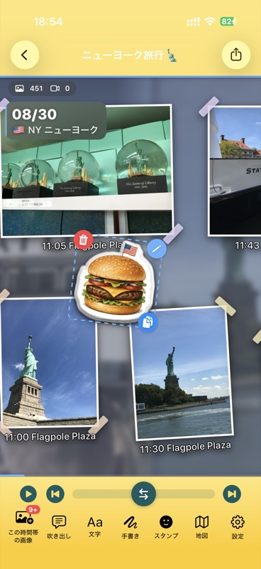
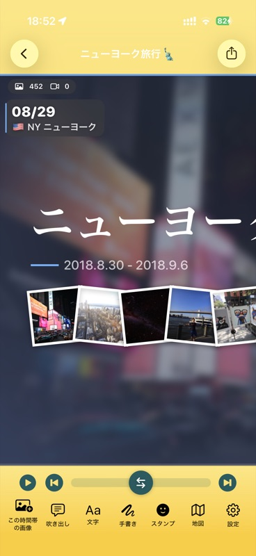
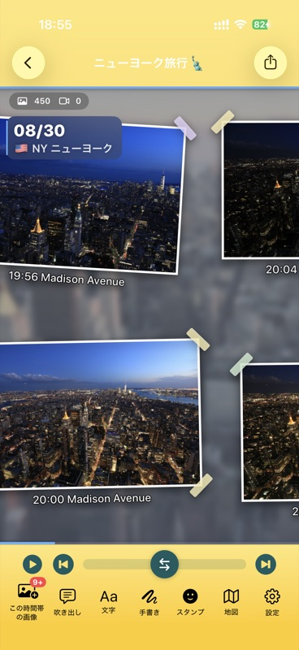
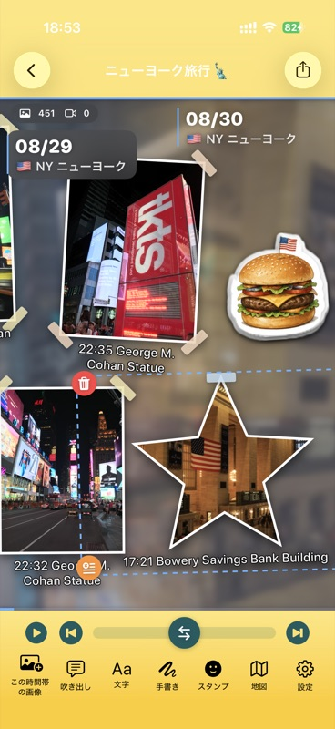
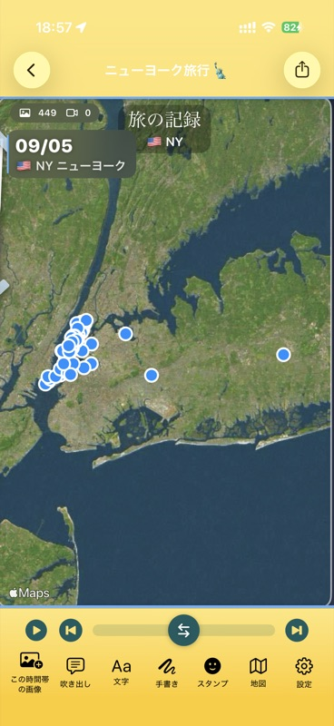
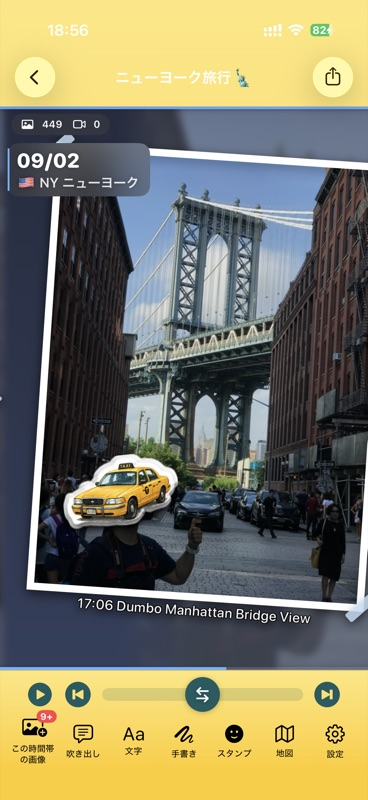
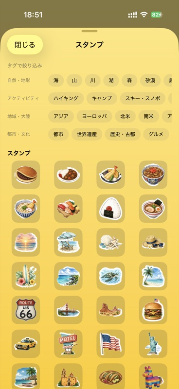
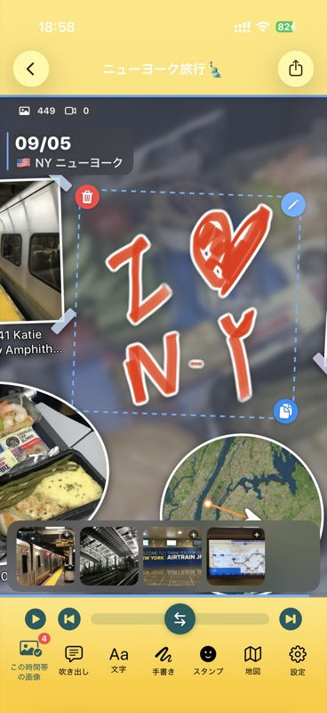
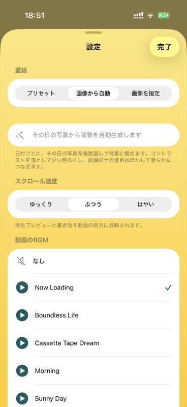
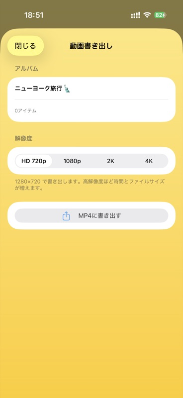
撮りっぱなしの写真が、
もう一度、旅になる。
期間を選ぶだけで、あとは自動で並びます。飾りつけは自由に。
期間を選ぶだけ
旅の期間を指定すると、写真ライブラリから写真と動画を集めて時系列に並べます。最初はカメラで撮影したものだけを対象にするので、スクリーンショットが混ざりません。
地図が道のりを描く
位置情報から、訪れた場所に丸い地図や、移動の軌跡をたどるルート地図を自動で配置。旅の最後には国や地域ごとの「旅の記録」が並びます。
78種類のスタンプ
写真の内容や訪れた国に合わせて、同梱スタンプが自動で置かれます。自分の画像からオリジナルスタンプを作ることもできます。
飾りつけは自由に
マスキングテープ、傾き、白フチ、楕円・星・六角形の切り抜き。文字、吹き出し、指やApple Pencilで描ける手描きも。
動画に書き出す
横スクロールしていく動画として書き出せます。HD 720p / 1080p / 2K / 4K から選べ、BGMは試聴しながら選択。スクロール速度も調整できます。
写真はそのまま
アプリが写真を削除したり書き換えたりすることはありません。回転やお気に入りの変更は、アプリからも行えます。
こんなふうに仕上がります
ドラッグ、または左右の矢印キーで見られます。
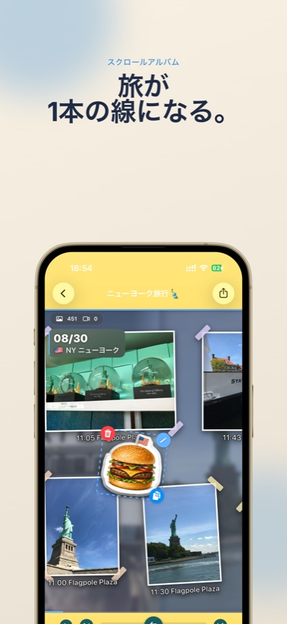
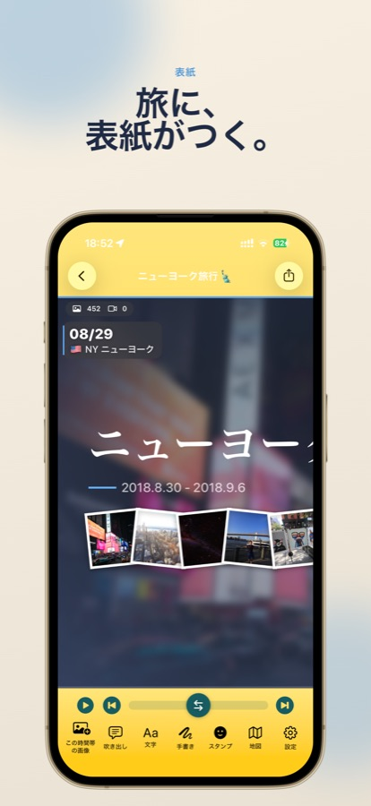
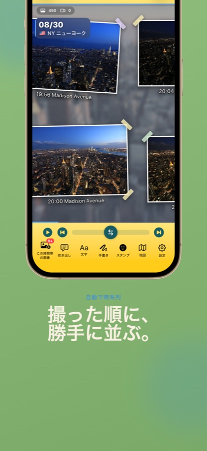
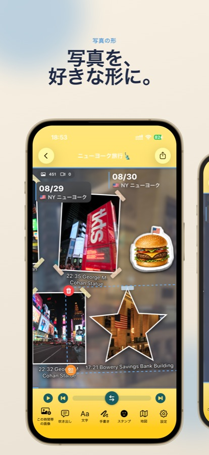
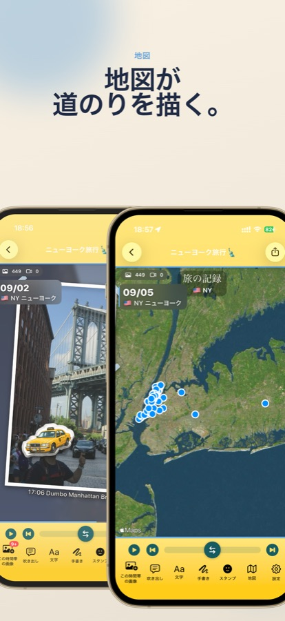
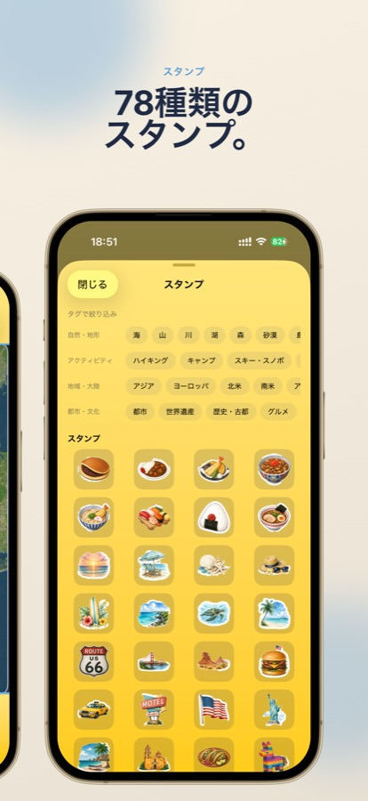
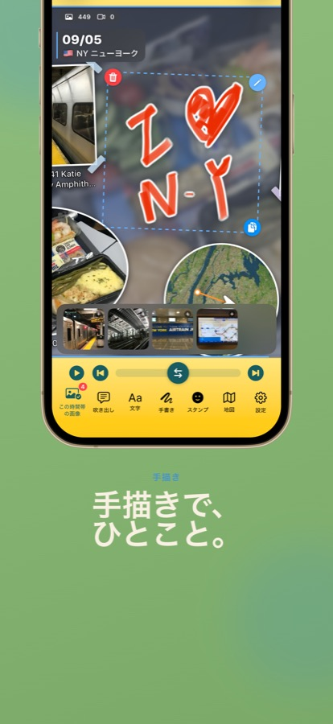
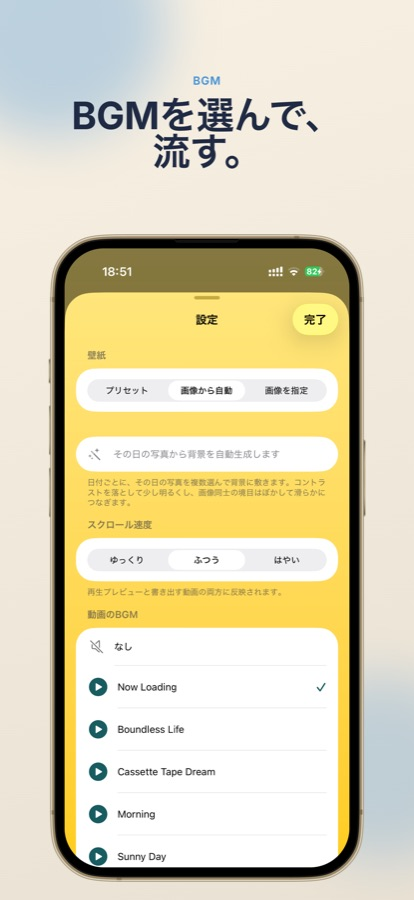
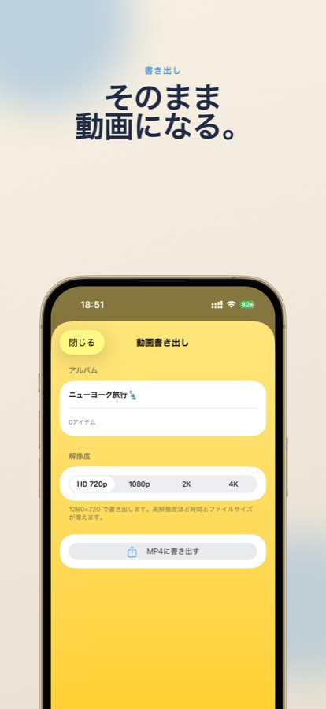
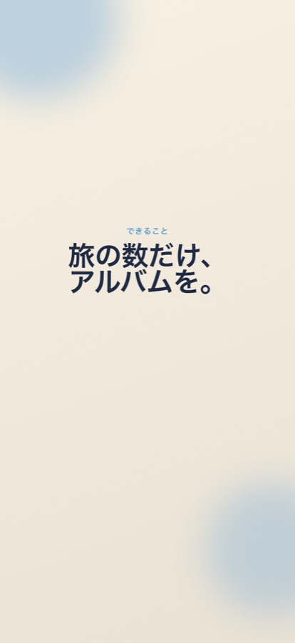
3ステップ
旅の期間を選ぶ
行った日から帰った日までを指定します。あとはアプリが写真ライブラリから集めてきます。
横にスクロールして飾る
並んだ写真を眺めながら、スタンプや手描きで自由に飾りつけ。写真の大きさや形も変えられます。
動画に書き出す
BGMと解像度を選んで書き出せば完成。そのまま共有できます。